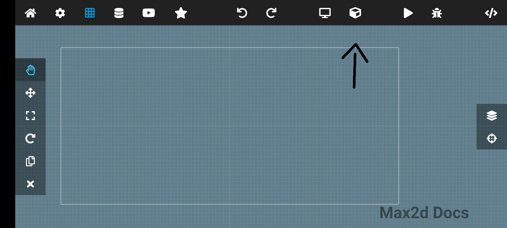

But You Dont Now How This App Works? Your In The Right Place!
First You Need To Create An Project.
And Name Your Project And Press Ok
Boom You Have An Project But It Is Blank So You Need To Set An Backround Color
First Click On The Setting Icon And Scene Camera
Click Backround Color
And Choose The Color That You Want
And Hit The Triangle Button To See It
Here Is The Result (its just an blank game)
Sprite
So Now You Have An Project With An Backround So What Now?
Now You Need An Sprite Im Just Gonna Get An Pacman Sprite Online Credits PngEGG
Press The Box Icon

And Click Sprite
Press The Plus Button
And Select Your Img (i will not show this step bcuz of my gallery lol), And Click The Sprite You Make
Resize The Sprite If (If You Want
Click The Sprite Name (the default name is new game object
Click the Add Component Button And Add Rigid Body
Also Set The Gravity Scale To 0 So It Will Not Fall
Lets Add An Joystick for the sprite so we can move it here's an gif
Here's An Video How To Use The Joystick
Math & Logics
This Section well discuss how to use math in max2d
Here Is The Math Things You Can do
math_random( , )
This Will Generate An Random Number From Start To Limit like math_random(1,10) Will Result 6.
math_cos()
The math_cos() method returns a numeric value between -1 and 1, which represents the cosine of the angle. Because cos() is a static method of Math. Example math_cos(4) will be -0.65364362086
math_sin()
math_sin() returns the sine of the number
Example math_sin(4) returns 0.069756473744125300775958835194143328600
math_exp()
The "exp" stands for "exponential". The term "exp(x)" is the same as writing ex or e^x or "e to the x" or "e to the power of x". In this context, "e" is a universal constant, e = 2.718281828... it goes on forever but you don't need to know the value, your calculator probably has exp(x) or e^x as a function (if, as I am assuming, it is a scientific calculator).
math_sprt()
The Math.sqrt() function returns the square root of a number
Example: math_sqrt(2) returns 1.414
math_atan()
The math_atan() method returns the arc tangent of a number (x) as a numeric value between -PI/2 and PI/2 radians. Arc tangent is also defined as an inverse tangent function of x, where x is the value of the arc tangent is to be calculated.
math_atan2(, )
The Math_atan2() method returns a numeric value between -π and π representing the angle theta of an (x, y) point. This is the counterclockwise angle, measured in radians, between the positive X axis, and the point (x, y) . ... Because atan2() is a static method of Math , you always use it as Math.
math_max()
The Math_max() function returns the largest of the zero or more numbers given as input parameters, or NaN if any parameter isn't a number and can't be converted into one.
math_min()
The static function Math_min() returns the lowest-valued number passed into it, or NaN if any parameter isn't a number and can't be converted into one
math_acos()
math_acos() returns the inverse cosine of a number (radians) that is sent as a parameter. The return value lies in interval [0, pi] radians.
math_asin()
The math_asin() function returns the arcsine (in radians) of a number, that is. ∀ x ∊ [ - 1 ; 1 ] , Math.asin ( x ) = arcsin ( x ) = the unique y ∊ [ - π 2 ; π 2 ] such that sin ( y ) = x
math_tan()
In a right angled triangle, the tangent of an angle is: The length of the side opposite the angle divided by the length of the adjacent side.